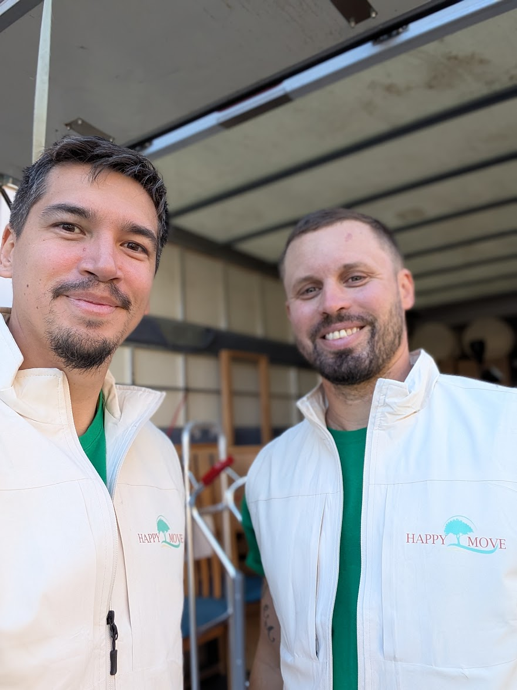

Qui sommes-nous ?
Happy Move accompagne les familles et les seniors genevois dans les moments de transition — départ en EMS, débarras, nettoyage — avec humanité, dans tout le canton de Genève.


Une conviction née d'une expérience personnelle
En 2019, un proche de Yann, le fondateur de Happy Move, est entré en maison de retraite. Face au manque de structures capables d'accompagner cette transition dans son ensemble, c'est lui qui a dû gérer seul le tri, le déménagement et toutes les démarches — sans personne pour l'épauler.
Cette expérience l'a convaincu qu'il fallait un service professionnel et humain, dédié à l'accompagnement des seniors et de leurs familles lors d'un départ en maison de retraite. Happy Move Sàrl est né de cette conviction en 2022.
Depuis, l'entreprise a élargi son accompagnement à tous les moments de transition de vie : débarras pour particuliers, nettoyage fin de bail garanti, et nettoyage récurrent pour les entreprises genevoises — toujours avec la même exigence de rigueur et d'humanité qui a tout déclenché.
Discuter de votre projet →Notre mission
Offrir un service à la personne de qualité, avec transparence envers nos clients et leurs proches aidants — pour construire une relation de confiance à chaque étape.
Nos valeurs
Ce qui guide chacune de nos interventions.
Douceur et patience
Chaque situation est différente — nous prenons le temps qu'il faut, sans précipiter les familles.
Respect
Des objets, des lieux et des histoires de chacun de nos clients.
Transparence
Un devis fixe communiqué avant l'intervention — jamais de mauvaise surprise sur la facture.
Fiabilité
Un seul interlocuteur, de la première prise de contact jusqu'à la mission terminée.
Nos services aujourd'hui
Ce qui a commencé par l'accompagnement EMS couvre désormais tous les moments de transition.
Départ en EMS
Notre spécialité d'origine : déménagement, débarras et nettoyage fin de bail pour un départ en maison de retraite, résidence senior ou IEPA.
En savoir plus →Appartement, cave ou succession — un débarras rapide et respectueux pour tous les Genevois.
En savoir plus →Nettoyage fin de bail
Résultat garanti pour votre état des lieux de sortie, avec notre garantie régie.
En savoir plus →Nettoyage entreprise
Entretien récurrent de bureaux, cabinets et commerces, avec un mois d'essai sans engagement.
En savoir plus →Notre zone d'intervention
Nous intervenons dans tout le canton de Genève, notamment à Lancy, Onex, Carouge, Meyrin, Vernier, Veyrier, Thônex et au centre-ville.
Une question ? Parlons-en directement.
Choisissez votre canal préféré — nous répondons sous 24h, sans engagement.